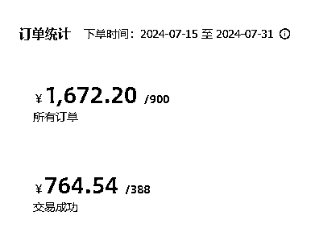
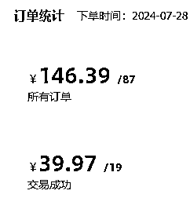
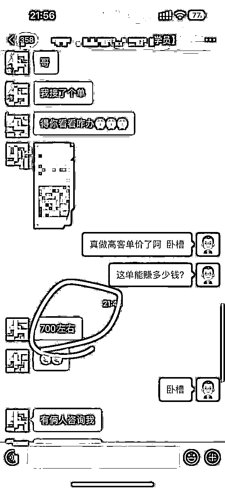
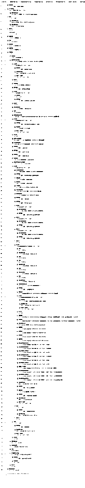
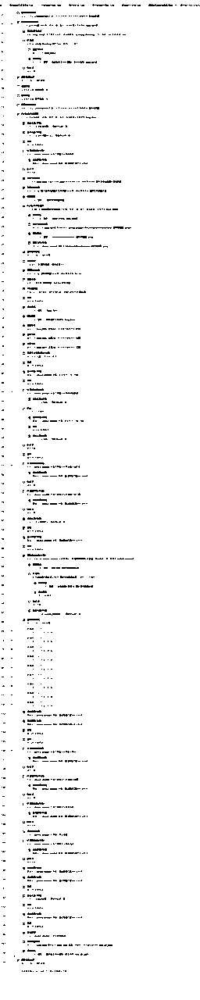
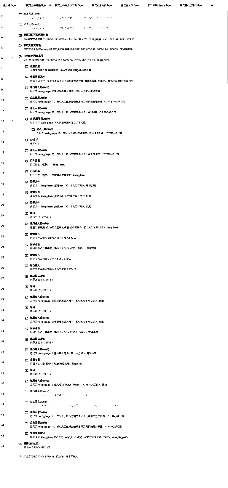
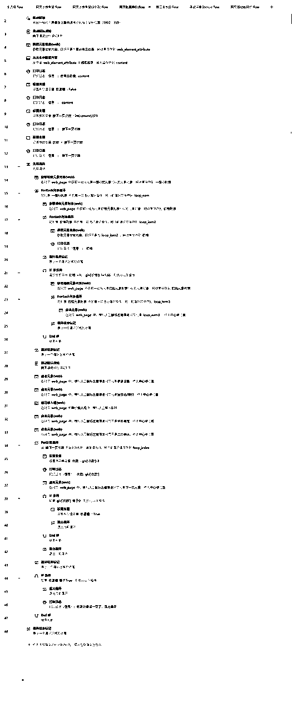
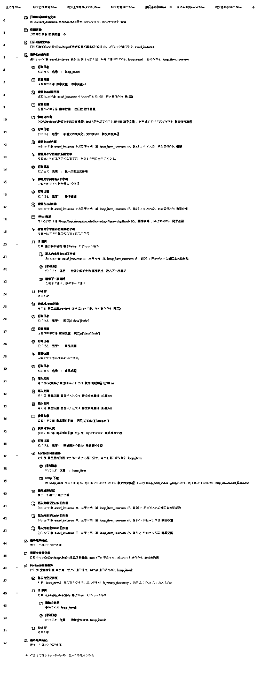
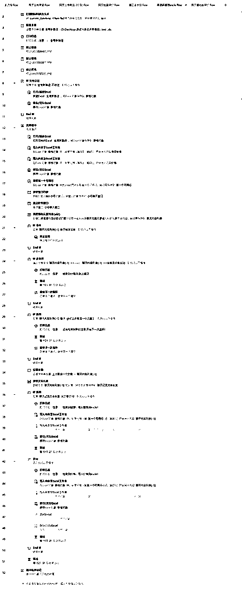

来源：https://riodtlbegu.feishu.cn/docx/PgCsdlYyWomJu9xpFbJcawmunsg
大家好，我是锦城随笔
最近自己在测试虚拟项目,第一个平台测试的是闲鱼平台
一共做了45天左右,最近每天平均收益都超过一百了！
先上最近15成绩:
平均每天100元，然后最高的一天146元


看起来好像也不咋地，实际上每天真正操作的时间没有超过一个小时
都是使用脚本在全自动跑！
经过几次的更新迭代
从半自动更新到几乎全自动了
先说一下自己目前所用到脚本一共有哪些:
1.采集脚本:包括关键词搜索和同行主页爆品的采集
2.去水印脚本:并且获取标题和文案,使用的接口,效率非常高！
3.上传商品脚本:包括网页端的上传脚本和手机app端的上传商品脚本。
4.批量降价脚本:包括闲管家批量降价和手机app端的批量降价。
5.还有一些不经常用的脚本，包括自动签到过任务和微信监听手动采集脚本等等
这些脚本都是影刀写的,影刀的脚本只能自己写,不能分享哈~
大家有遇到影刀的问题都可以跟我一起多交流！
一会我把最近更新的脚本都放在最底下,大家直接抄作业就可以了！
如果拥有以上的所有脚本，就可以解放双手了！
本来跟一个朋友交流虚拟项目,也帮忙调试了脚本,准备一起跑虚拟测测
后面这个小伙伴拿了一个账号通过脚本去测试高客单的
结果当天就出单了，利润700+

做闲鱼虚拟的前面十天左右，自己也都是手动采集，手动去水印，手动上传商品
发现效率实在是太低
现在一共做了40天，已经几乎可以全自动了~
部分展示脚本展示一下哈:






这套打法同样适用于小红书，个人感觉小红书的天花板应该会高一些！
希望大家通过这套组合拳能够日进斗金！
对影刀有学习或者兴趣的，都可以找我一起交流,知无不言！